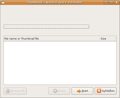
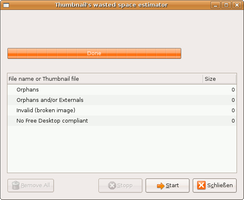
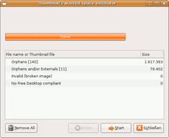

Thumbnails-Checker
Dieser Artikel wurde für die folgenden Ubuntu-Versionen getestet:
Ubuntu 16.04 Xenial Xerus
Ubuntu 14.04 Trusty Tahr
Zum Verständnis dieses Artikels sind folgende Seiten hilfreich:
Thumbnails sind kleine Vorschaubilder des Originals, die einen sehr geringen Speicherplatz benötigen und im Homeverzeichnis im versteckten Ordner .thumbnails gespeichert werden. Mit der Zeit kann sich dieser Ordner extrem vergrößern. Gründe sind: gelöschte, geänderte, defekte und verschobene Dateien sowie defekte Thumbnails, die als unnötiger Ballast in dem Ordner ~/.thumbnails verbleiben. Thumbnails-Checker  untersucht Thumbnails, überprüft sie auf Aktualität und listet die nicht mehr aktuellen Thumbnails auf, die per Mausklick gelöscht werden können. Je nach Anzahl der gesammelter Thumbnails sind also große Einsparungen möglich.
untersucht Thumbnails, überprüft sie auf Aktualität und listet die nicht mehr aktuellen Thumbnails auf, die per Mausklick gelöscht werden können. Je nach Anzahl der gesammelter Thumbnails sind also große Einsparungen möglich.
Wenn einen die kurze Wartezeit beim Neuerstellen nicht stört, kann man auch einfach ab und zu den Ordner ~/.thumbnails komplett löschen.
Installation¶
Zur Verwendung benötigt werden die Pakete
python-gnome2
python-glade2
 mit apturl
mit apturl
Paketliste zum Kopieren:
sudo apt-get install python-gnome2 python-glade2
sudo aptitude install python-gnome2 python-glade2
Dann erstellt man einen Ordner thumbnail-checker, in dem die folgende Dateien ("Rechtsklick -> Speichern") gespeichert werden.

Alternativ kann man den Inhalt der Dateien in einen Texteditor [3] kopieren und mit dem jeweiligen Dateinamen abspeichern.
Hinweis!
Fremdsoftware kann das System gefährden.
Programm patchen¶
Nach dem alle Dateien im Ordner sind, müssen noch die Dateien thumbnail-checker.glade und thumbnail-checker.py gepatcht werden. Dazu öffnet man ein Terminal [2] und bewegt sich in das Verzeichnis thumbnail-checker. Dort patcht man die Dateien mit dem Befehl:
patch < thumbnail_patch
Folgendes wird dann im Terminal ausgegeben:
patching file thumbnail-checker.glade patching file thumbnail-checker.py
Installation für alle Nutzer¶
Will man das Programm allen Nutzern auf einem PC zur Verfügung stellen, verschiebt man nun den Ordner thumbnail-checker mit Root-Rechten nach /opt.
Als nächstes erstellt man ein kleines Skript, das die Arbeit erleichtern soll. Dazu öffnet man einen Texteditor mit Root-Rechten [3] und speichert folgenden Text
#!/bin/bash cd /opt/thumbnail-checker python thumbnail-checker.py
unter /usr/local/bin/thumbcheck ab. Dieses Skript muss man danach noch ausführbar machen [1] (Es werden wieder Root-Rechte benötigt!).
Das Programm kann dann über thumbcheck gestartet werden [4].
Installation nur für einen Nutzer¶
Auch hier erstellt man ein Skript, das die Arbeit erleichtern soll. Dazu öffnet man einen Texteditor [3] und speichert folgenden Text
#!/bin/bash cd ~/thumbnail-checker python thumbnail-checker.py
unter /home/USERNAME/bin/thumbcheck ab (USERNAME natürlich korrekt ersetzen und den Ordner bin gegebenenfalls erstellen). Dieses Skript muss danach noch ausführbar gemacht [1] und ggf. der Ordner bin in die PATH eingetragen [5] werden.
Benutzung¶
Nach dem Start des Programm sieht die Oberfläche wie folgt aus:
|  |
| Fenster nach Programmaufruf. Beginn der Überprüfung mit Klick auf Start. |
|  |
| Keine zu löschenden Thumbnails. Löschtaste (links) ist grau hinterlegt. |
|  |
| Es gibt Thumbnails. Löschtaste ist aktiviert. |
 weitere Programme zur Systemoptimierung
weitere Programme zur Systemoptimierung- Erstellt mit Inyoka
-
 2004 – 2017 ubuntuusers.de • Einige Rechte vorbehalten
2004 – 2017 ubuntuusers.de • Einige Rechte vorbehalten
Lizenz • Kontakt • Datenschutz • Impressum • Serverstatus -
Serverhousing gespendet von